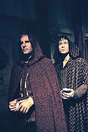
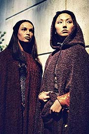
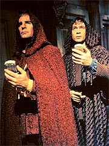
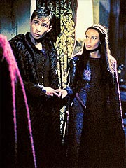
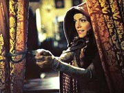
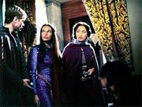

Episdio
anterior | Prximo
episdio
Sinopse:
Aps vrios meses de viagem pelo
espao, a Enterprise finalmente encontra um planeta classe
Minshara densamente povoado. Archer quer descer e fazer contato
com os habitantes, mas T'Pol recomenda que ele siga o procedimento
Vulcano, que exige que uma civilizao tenha capacidade de dobra
espacial antes de ser contatada. O capito reconhece que a presena
da Enterprise poderia causar um impacto indesejado quela
sociedade, mas est determinado a enviar algum para estudar o
planeta. Ele decide mandar Hoshi Sato, disfarada como uma Akaali
(a espcie que habita o planeta), j que ela teria maior
facilidade para lidar com a lngua aliengena.

Entretanto, pouco
antes da descida, T'Pol detecta um trao de emisso de neutrinos
vindo do subsolo de uma das construes de um vilarejo,
indicando a presena de um reator de antimatria --tecnologia
muito alm da dos Akaali. Archer desconfia que o equipamento
pertena a uma outra espcie, aliengena, que teria visitado o
planeta, e decide mandar um grupo completo para investigar. Ele,
T'Pol, Tucker e Sato so alterados cirurgicamente para parecer
como os nativos.
Sato trabalha na identificao e traduo das lnguas aliengenas
e, junto de T'Pol, observa que h alguns habitantes que parecem
afetados por algum tipo de molstia. Enquanto isso, Archer e
Tucker visitam o local onde estaria o reator --um antiqurio.
Como tarde da noite, o estabelecimento est fechado, mas a
dupla decide arrombar a porta e entrar assim mesmo. Eles o fazem,
sem saber que esto sendo observados.
Quando eles entram, descobrem uma porta que est protegida por um
campo de fora. Antes que possam fazer algo, so surpreendidos
por uma mulher, que os acusa de estarem envolvidos nos misteriosos
carregamentos que so feitos de madrugada no antiqurio. Ela
acredita que essas atividades estejam de algum modo ligadas a uma
praga que assola a populao da cidade.

Archer
e Tucker tentam convenc-la de que isso no verdade, mas ela
os ameaa com uma arma primitiva. Por sorte, T'Pol chega em tempo
e tonteia a mulher, evitando que seus colegas sejam feridos. Sato
examina os documentos da mulher e descobre que ela se chama Riann,
e trabalha como boticria. Archer decide lev-la para casa. Ao
despertar, ela volta a interrog-lo, mas ele diz apenas ser um
investigador vindo de outra cidade. Ela diz que misteriosos
carregamentos ocorrem toda semana na frente do antiqurio e somem
sem deixar vestgios. Tambm revela que os casos da peste comearam
apenas um ms aps a chegada de Garos, o dono do
estabelecimento, cidade.
Archer e Tucker decidem voltar ao antiqurio para interrogar
Garos e descobrem que seu DNA no o mesmo de todas as outras
formas de vida do planeta. Garos diz que era um explorador da raa
Maluriana, mas que acabou decidindo viver entre os Akaali
pacificamente. Ele afirma que seu reator de antimatria serve
apenas para que ele possa replicar alimentos e roupas. Mas a dupla
da Enterprise se pergunta para que ele precisaria de um reator
potente o suficiente para alimentar e vestir metade do continente.
Archer volta a visitar Riann, dessa vez acompanhado de T'Pol. A
Vulcana coleta amostras de gua e leva de volta Enterprise
para anlise. L, Phlox descobre que o suprimento de gua da
cidade est sendo contaminado com um dejeto industrial. Enquanto
isso, Archer e Riann observam um homem transportando caixas do
antiqurio para a floresta. Eles tentam ver o que h nas caixas,
mas elas so subitamente transportadas, via raio trator, para uma
pequena nave espacial que voa acima de suas cabeas.
Um tiroteio comea a se desenrolar, e Archer acaba recuperando um
controle remoto de um dos Malurianos. Ele volta com Riann at o
antiqurio e consegue desativar o campo de fora que protege a
porta. O que ele encontra uma grande operao de minerao
subterrnea. A atividade o que est contaminando a gua dos Akaali.
Ele tenta operar os controles para desativar o campo que impede a
Enterprise de transportar alguma coisa daquela regio, a fim de
extrair o reator, mas acaba ficando preso dentro do complexo.

Enquanto isso, de
sua nave em rbita, Garos ameaa a Enterprise, ordenando-a que
deixe o planeta imediatamente. T'Pol diz que pretende esperar o
capito, mas o Maluriano diz que ele est morto. Felizmente ele
no est, e acaba conseguindo desativar o campo e escapar. T'Pol
teleporta o reator para a Enterprise e, em seguida, para o espao,
onde ela o usa como uma bomba (detonada por um torpedo) para
neutralizar a nave Maluriana.
No planeta, Archer, com a ajuda de Riann, consegue capturar os
agentes Malurianos e os ordena a deixar o local. Ele promete que
os Vulcanos checaro de tempos em tempos para se certificarem de
que ele no volte. Ele sugere que Riann no revele a ningum
tudo que aconteceu, ao que ela retruca que j no pretendia
contar nada: ningum iria acreditar mesmo...
Comentrios:
Quando todo mundo disse que Enterprise iria marcar
o retorno a um estilo antes s visto durante a Srie Clssica,
eles no estavam brincando. E "Civilization" est
a justamente para provar isso. Trata-se de um segmento que
guarda vnculos com o seriado original em muito mais do que
detalhes, menes e referncias, como estava sendo feito na srie
at ento.
O formato narrativo bastante conhecido: uma histria embasada
em um planeta, aliengenas muito parecidos com humanos, um caso
amoroso para o capito e ao no melhor estilo clssico, com
muitos socos e pontaps. No fosse o apuro tcnico e a
qualidade da maquiagem e dos efeitos especiais, poderamos muito
bem pensar que era um episdio perdido da Jornada clssica.

No
era. O que nos deixa com a segunda opo: um plgio. Muitos
crticos acharam que esse episdio deixou a desejar por no
trazer elementos novos, por ser muito previsvel, muito clich.
Mas a verdade que no preciso uma exploso de
originalidade para fazer o que os fs querem --episdios capazes
de entreter.
"Civilization" sem dvida consegue isso, com
sobras. A histria tem tudo, em dose equilibrada: humor, ao,
aventura, suspense, romance. Que mais algum pode querer?
O episdio claramente foi feito para o capito da Enterprise.
dele a determinao de estudar os Akaali de perto, no
importando os riscos de contaminao cultural, dele a deciso
de investigar a fonte de neutrinos, dele a funo de
confrontar Garos pessoalmente e dele a de se
"relacionar" com Riann.
Alis, por falar nisso, todo o envolvimento entre os dois comeou
quase que por acidente --agradea ao tradutor universal. bvio
que os roteiristas de Jornada nas Estrelas nunca conseguiro
apresentar esse mgico equipamento de forma verossmil. Mas aqui
pelo menos ele bem utilizado como um alvio cmico, embora
seja possvel apontar n inconsistncias. hilrio ver Archer
beijando Riann somente para ganhar tempo a fim de corrigir o
funcionamento do tradutor universal, via comunicador.

Todo o
relacionamento dos dois, e a inteligncia de Riann, que desde o
momento zero j desconfiava que Archer nada tinha de Akaali (o
que no chega a ser nenhum prodgio, dado que o bom capito no
muito sutil ou convincente quando conta suas mentiras), s
fazem por ajudar o episdio. A interao dos dois no momento em
que precisam decidir qual boto apertar no poro de Garos bem
engraado, assim como os dilogos que sucedem o primeiro contato
imediato de Riann com a nave aliengena.
Embora Archer seja o centro da histria e a espinha dorsal de
toda a narrativa, T'Pol tambm teve seu momento de glria. Sua
atuao como capit interina da Enterprise enquanto Archer se
virava com Riann no planeta foi sensacional. A forma como ela
conduziu a situao e soube desabilitar a nave Maluriana (que,
para variar, era mais poderosa que a Enterprise) foi de tirar o
chapu para a Vulcana.
Tambm foi especialmente interessante o confronto entre Tucker e
T'Pol nesse momento crtico do episdio. O engenheiro quase arma
um motim, quando a primeiro-oficial ameaa abandonar Archer por l.
Apesar da aproximao dos dois em "Breaking
the Ice", bom ver que os roteiristas ainda no
esqueceram que os humanos em geral, e Tucker em especial, tm
dois ps atrs com relao s aparentemente traioeiras
atitudes Vulcanas.
Os demais personagens passaram batidos por "Civilization".
Hoshi Sato pelo menos teve a chance de participar da misso
terrestre, e pudemos ver toda a sua empolgao ao descobrir
novas lnguas aliengenas. Phlox e Reed tiveram participao
quase nula. Mayweather foi nulo.

A
maquiagem poderia ter sido um pouco mais caprichada, mas tendo em
vista a necessidade de os Akaali fossem atraentes o bastante para
que a audincia aceitasse o relacionamento de Archer e Riann, a
questo era uma sinuca de bico. Michael Westmore, como de
costume, se saiu bem do problema. E os figurinos e cenrios
medievais foram extremamente bem projetados, dando um ar muito
mais interessante ao episdio.
As tomadas espaciais, como de costume, no foram menos que
perfeitas. A direo cumpriu seu papel, mas no foram
apresentadas quaisquer inovaes. O bom e velho "arroz com
feijo".
Alis, talvez essa seja a melhor forma de definir "Civilization":
um episdio "arroz com feijo". Bom, perfeitamente
degustvel, mas ainda assim... rotineiro.
Citaes:
Tucker - "There
is... one other thing... might be worth swinging by to take a look.
A Minshara class planet, about four and a half light years away."
("H... uma outra coisa... que pode valer a pena dar uma
olhada. Um planeta classe Minshara, cerca de quatro e meio
anos-luz daqui.")
Archer - "Any life signs?"
("Sinais de vida?")
Tucker - "Only about 500 million!"
("S uns 500 milhes!")
Archer - "Starfleet could have sent a probe out here to
make maps and take pictures, but they didn't. They sent us, so
that we could explore with our own senses."
("A Frota Estelar poderia ter mandado uma sonda aqui para
fazer mapas e tirar fotos, mas eles no fizeram. Eles nos
mandaram, para que pudssemos explorar com nossos prprios
sentidos.")
Archer - "I guess we'll have to wait until morning."
("Acho que vamos ter de esperar at a manh.")
Tucker - "There could be a lot more people around then.
Might be easier to get a look at this thing tonight."
("Pode haver muito mais gente por aqui amanh. Seria mais fcil
dar uma olhada nessa coisa hoje noite.")
Archer - "Except we're on the wrong side of this door."
("Exceto pelo fato de estarmos do lado errado da
porta.")
Tucker - "Not for long..."
("No por muito tempo...")
Archer - "Seventy-eight light-years to get here, and our
first act is breaking and entering."
("Setenta e oito anos-luz para chegar aqui, e nosso primeiro
ato arrombar e entrar.")
Tucker - "Maybe you don't have to mention this part in
your log?"
("Talvez voc no queira mencionar essa parte em seu dirio?")
Archer - "Let's try not to shoot anyone else while we're
here, okay?"
("Vamos tentar no atirar em ningum mais enquanto
estivermos aqui, ok?")
Garos - "How did you learn about this facility, captain?
Was it from a somewhat ugly Tellarite merchant perhaps?"
("Como descobriu sobre essa instalao, capito? Foi de um
mercador Telarita meio feio talvez?")
Sato - "Even if we get the reactor, how are we going to
keep them from taking it back?"
("Mesmo que peguemos o reator, como vamos evitar que eles o
peguem de volta?")
T'Pol - "If they want it so badly, perhaps we should give
it to them."
("Se eles o querem tanto, talvez devamos d-lo a
eles.")
Trivia:
 Nas primeiras verses da histria, Riann se chamava Tyala.
Nas primeiras verses da histria, Riann se chamava Tyala.
Charlie Brewer (creditado como aliengena) j havia aparecido
antes em Jornada nas Estrelas, como dubl para o sexto
filme de cinema, "A Terra Desconhecida". J Wade
Andrew Williams (Garos) havia aparecido antes como Trajis Lo-Tarik,
no episdio "One", de Voyager (na ocasio
ele foi creditado como Wade Williams).
Connor Trinneer fez comentrios sobre o episdio: "Ns
descobrimos um planeta chamado de classe Minshara, que pode
sustentar vida. similar Terra, ento temos uma atmosfera
que no exige que usemos nossas roupas EV [extra-veiculares].
Vamos l para descobrir o que h com os nativos. Ns vamos l
e descobrimos que so pr-coloniais. Eles no tm nenhuma
tecnologia alm do que voc teria no fim do sculo 19 --navios
a vela, coisas do tipo. Mas quando descobrimos que h algum l
embaixo com tecnologia que igual nossa, resolvemos checar
isso."
Ficha
tcnica:
Escrito por Phyllis Strong
& Michael Sussman
Direo de Mike Vejar
Exibido em 14/11/2001
Produo: 009
Elenco:
Scott
Bakula como Jonathan Archer
Jolene Blalock como
T'Pol
John Billingsley
como Phlox
Anthony Montgomery
como Travis Mayweather
Connor Trinneer como
Charlie 'Trip' Tucker III
Dominic Keating como
Malcolm Reed
Linda Park como Hoshi Sato
Elenco convidado:
Diane DiLascio como Riann
Wade Andrew Williams como Garos
Charlie Brewer como o aliengena